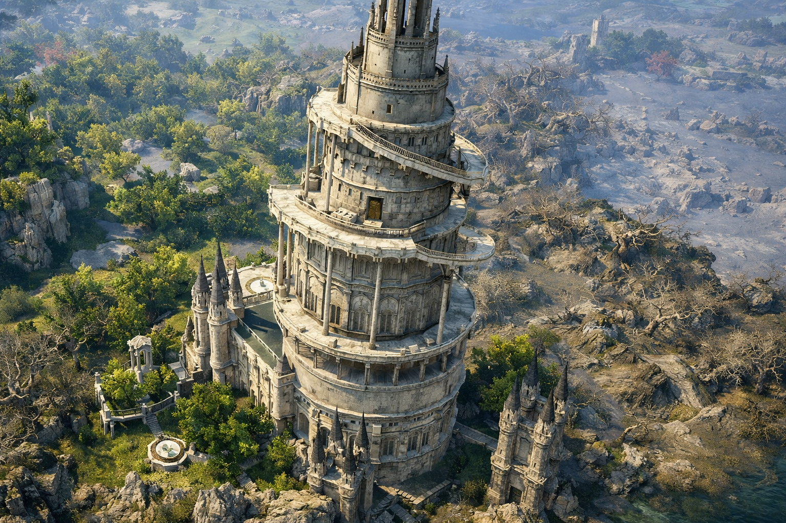

Purelight Tower stands east of the ruined city of Turayne in the land of Laslan, on the continent of Solisium. The tower rises upon a peaceful hill surrounded by forests and quiet plains, shining like a beacon of hope in a land scarred by ancient tragedy and forgotten darkness. Built from smooth white stone touched by golden light, Purelight Tower is known throughout Laslan as the sacred center of healing magic and spiritual balance. For generations, healers from distant villages, noble families, and hidden sanctuaries have traveled here to study the art of restoring life and easing suffering. Young apprentices begin their training within the tower under the guidance of experienced healer mages who dedicate their lives to knowledge, compassion, and discipline. Its halls are filled with ancient manuscripts, healing chambers, quiet libraries, and sacred meditation rooms where silence itself feels calming. At the center of the tower burns the legendary Eternal Flame of Pure Light, a sacred fire believed to embody hope, life, purity, and protection. According to ancient legends, the flame has never extinguished — not even during wars, plagues, or the darkest eras of Solisium's history. Despite standing close to the cursed Ruins of Turayne, the tower remains untouched by corruption. Many believe powerful protective magic surrounds the entire sanctuary, shielding it from darkness lurking beyond its borders. The healers of Purelight Tower serve not only Laslan, but all people in need. Travelers, soldiers, nobles, and the wounded alike seek refuge within its walls, knowing they will be treated without judgment or fear. Purelight Tower is more than a sanctuary of healing — it is a symbol of hope, compassion, and humanity's determination to preserve light even in a world consumed by shadows.